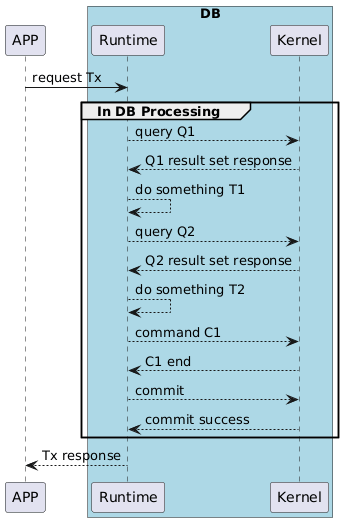

Mudu 过程#
1. 设计目标#
Mudu 过程将交互式执行与存储过程统一为单一的数据本地编程模型。目标如下：
数据本地性：在数据所在位置执行业务逻辑，以最小化跨工作者通信。
开发者体验：允许使用现代语言和熟悉的顺序代码模式实现过程。
安全与隔离：在 WASI 沙箱中运行用户逻辑，并通过显式系统调用限制访问。
性能：通过异步运行时和每工作者亲和性，实现低延迟、高并发的工作负载。
2. 交互式执行与存储过程——以及统一模型#
传统的交互式执行（REPL / 客户端驱动）是即时且灵活的，但通常会产生远程调用和更高的延迟。存储过程是预先部署的、靠近数据运行的服务器端代码，但通常受限于专用语言和部署模型。
Mudu 过程将两者统一：
相同的过程代码可以由客户端以交互方式调用（即席调用），也可以像存储过程一样安装并调用。
运行时支持细粒度的系统调用，使过程代码能够在不离开沙箱的情况下执行数据库操作。
这意味着开发者可以进行交互式原型设计，然后将相同的代码发布为具有数据本地性和运维控制的部署过程。
下图展示了两种执行模型以及 Mudu 如何将它们统一为单一的基于 WASI 的执行流程。
交互式调用（左侧）：客户端发送单个查询和命令，每一步都伴随网络往返。
存储过程部署（右侧）：应用程序发送单个请求；所有查询执行、逻辑处理和提交都在数据库运行时内部以数据本地方式完成。


两者都汇聚为单一的基于 WASI 的执行流程，过程在其中调用系统调用，而内核协调事务和路由。
3. WebAssembly / WASI 编译与运行时#
Mudu 将过程编译为 WebAssembly（WASI）组件，并在沙箱化运行时中执行它们。
为什么选择 WASI？
可移植性：WASI 模块与平台无关、与语言无关。
沙箱化：内核控制系统调用和 I/O 表面，以强制执行安全和资源限制。
工具链：多种语言可以面向 WASI 编译，从而实现多语言支持。
典型工具链流程：
使用支持的语言编写过程（本指南以 Rust facade 为例）。
运行
mtp生成包装代码并执行所选的同步/异步转换。将生成源码编译为 WASM 组件；使用示例构建任务可确保该顺序。
部署模块（将 mpk/包放入 mpk_path）并向内核注册。
以交互方式或作为存储过程调用；内核处理系统调用、事务和路由。
运行时暴露了一组紧凑的系统调用（打开会话、get/put/range/query/command/batch 等）。过程使用这些系统调用与数据库状态交互；所有网络和存储访问都由内核中介。
4. 过程规范#
Mudu 过程是带有 /**mudu-proc**/ 标记的函数，该标记告知转译器将紧随其后的函数暴露为过程：
/**mudu-proc**/
fn {procedure_name}(
oid: OID,
{argument_list...}
) -> RS<{return_value_type}>
过程名称 —— 一个合法的 Rust 函数名。
oid—— 传入过程的当前系统会话 ID。参数 —— 每个参数都必须能够被 Mudu 的 datum / tuple 转换体系表示。常见可用形式包括
i32、i64、String、f32、f64等标量，以及Vec<String>等容器形式；精确支持范围以mudu_type转换体系和转译器实现为准，而非固定白名单。返回值 —— 同样必须能够被该转换体系表示；当前实现支持标量值、tuple 返回值以及
Vec<T>形式的结果容器。
过程代码使用的结果别名 RS 定义如下：
use mudu::error::err::MError;
pub type RS<X> = Result<X, MError>;
在过程内部，代码通过系统调用与数据库交互：SQL 系统调用（mudu_query / mudu_command / mudu_batch）和键值系统调用（mudu_get / mudu_put / mudu_range）。
5. 事务#
Mudu 过程支持两种事务执行模式。
自动模式（当前）。 每次过程调用都作为一个独立事务运行：
过程返回
Ok时事务自动提交；过程返回
Err时事务自动回滚。
手动模式（规划中）。 跨多个过程传递共享会话 oid 以进行显式事务控制是一项规划中的能力。当前过程 API 不暴露 commit / rollback；下面的伪代码仅用于示意：
procedure1(oid);
procedure2(oid);
commit(oid); // 显式提交；或使用 rollback(oid) 显式回滚
6. Entity 映射#
mudu_query 自动执行 R2O（关系到对象）映射：它返回 EntitySet<R>，其中的行被解码为实体类型 R。R 必须实现 Entity trait：
pub trait Entity: Datum {
fn tuple_desc() -> &'static TupleFieldDesc;
fn table_name() -> &'static str;
fn from_tuple(row: &TupleField) -> RS<Self>;
fn from_tuple_value(row: &TupleValue) -> RS<Self>;
fn to_tuple(&self) -> RS<TupleField>;
fn to_tuple_value(&self) -> RS<TupleValue>;
}
Entity 实现通常是生成而非手写的：对于 sql/ddl.sql 中的每张表，mgen entity 生成一个 Rust 模块，包含：
实现
Entity的行结构体（如Wallets），以及TABLE_NAME与columns::*列名常量；针对含主键表的预构建 SQL 文本常量
SQL_GET_BY_PK、SQL_INSERT、SQL_DELETE_BY_PK，以及返回SQL_INSERT类型化绑定元组的insert_params()；部分更新变更集
<Table>Change，每个非键列对应一个FieldChange<T>：Unchanged（默认）不更新该列，Set(v)更新该列；对于可空列，Set(None)写入 SQLNULL。
update_by_pk(...) 构造 UPDATE ... SET ... WHERE <pk> = ? 语句及其绑定参数；当没有任何列被标记时返回 None：
let change = WalletsChange {
balance: FieldChange::Set(Some(200)),
..WalletsChange::default()
};
if let Some((sql, params)) = change.update_by_pk(user_id) {
mudu_command(oid, sql_stmt!(&sql), sql_params!(¶ms))?;
}
7. 多语言支持#
与许多绑定到嵌入式语言（SQL/PLSQL/PLpgSQL）的传统存储过程环境不同，Mudu 过程通过编译为 WASM 组件来支持多种高级语言。
当前支持的 Guest 语言：Rust、AssemblyScript、C#、Python、C 和 Go。本指南以 Rust facade 为例，它是过程 API 的参考实现。
未来：其他可以生成 WASM 组件的语言（Zig 等）。
这为利用现代语言生态系统、包管理器和开发者工具打开了大门，同时保持执行的安全性和可移植性。
8. Color-bind async/await：语言体验与运行时#
Mudu 采用“color-bind”模型，其中异步是运行时特性而非强制的语言构造：
开发者编写顺序的、看起来同步的代码，以提高清晰度和可维护性。
mudu 工具链（mudu-transpiler / 编译器遍）将阻塞式系统调用重写或转换为异步兼容调用（await 点），作为构建流水线的一部分。
这在精神上与 Zig 的方法类似，即运行时可以提供异步模型，而源代码保持简单。
优势：
开发者体验：编写直接的代码，无需手动管理异步状态机。
运行时效率：生成的 WASI 模块与宿主异步运行时（io_uring / Tokio）协作，以实现高并发。
转译器在底层将系统调用重写为异步系统调用，以便运行时可以在等待 I/O 或远程 RPC 时让出执行权。
9. 运行时约束#
调用预算默认启用，通过 [invocation_limits] 配置内存、fuel、执行超时、输入输出大小、宿主调用次数、资源数和并发准入，见配置参考。
自动事务处理描述的是宿主过程调用路径。本地适配器使用所选后端的事务语义；跨 worker 的分布式原子提交尚未实现。不能仅由 MPK 打包能力推断滚动升级、会话排空、逐过程 capability 策略或完整审计能力。
参考与示例#
系统调用参考请参见 系统调用参考，包括
mudu_open、mudu_get、mudu_put、mudu_query、mudu_command等。fs 对象 DDL 与
mudu_fs_*系统调用请参见 文件系统对象类型。WebAssembly 组件模型与 WASI 沙箱请参见 WebAssembly 集成。
如何构建与安装
.mpk包请参见 应用包。客户端、内核和工作者之间的可视化流程请参见文档中的架构图（
/_static/procedural_tx.png）。
Mudu 过程概述结束。